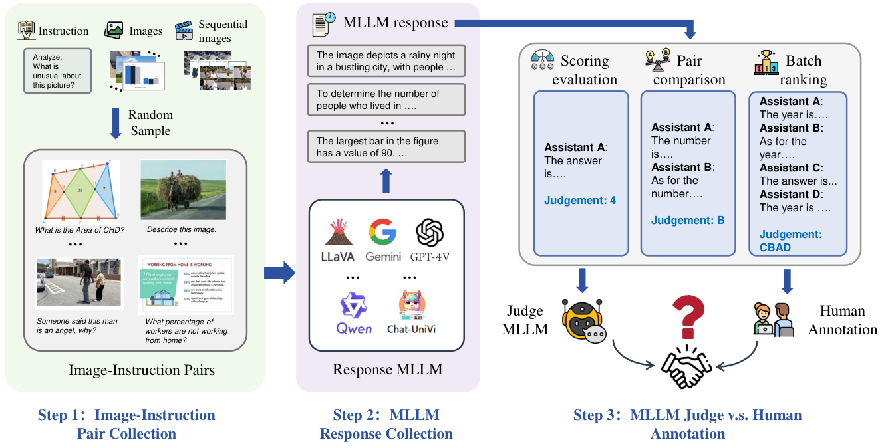
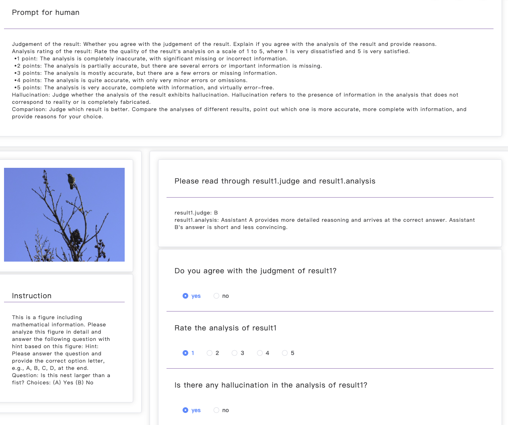

Multimodal Large Language Models (MLLMs) have gained significant attention recently, showing remarkable potential in artificial general intelligence. However, assessing the utility of MLLMs presents considerable challenges, primarily due to the absence of multimodal benchmarks that align with human preferences. Drawing inspiration from the concept of LLM-as-a-Judge within LLMs, this paper introduces a novel benchmark, termed MLLM-as-a-Judge, to assess the ability of MLLMs in assisting judges across diverse modalities, encompassing three distinct tasks: Scoring Evaluation, Pair Comparison, and Batch Ranking. Our study reveals that, while MLLMs demonstrate remarkable human-like discernment in Pair Comparison, there is a significant divergence from human preferences in Scoring Evaluation and Batch Ranking. Furthermore, a closer examination reveals persistent challenges in the judgment capacities of LLMs, including diverse biases, hallucinatory responses, and inconsistencies in judgment, even in advanced models such as GPT-4V. These findings emphasize the pressing need for enhancements and further research efforts to be undertaken before regarding MLLMs as fully reliable evaluators. In light of this, we advocate for additional efforts dedicated to supporting the continuous development within the domain of MLLM functioning as judges. The code and dataset are publicly available at our project homepage: https://mllm-judge.github.io/.
The advent of Large Language Models (LLMs), such as GPT-3 (OpenAI, 2023) and Llama (Touvron et al., 2023), has achieved substantial progress in content generation, including text generation (OpenAI, 2023), code generation (Roziere et al., 2023), and video synthesis (Wu et al., 2023a). The emergent abilities of LLMs, as demonstrated by the Chain-of-Thought (CoT) framework (Wei et al., 2022), present a promising avenue for their utilization as evaluators, also referred to as the LLM-as-a-Judge (Zheng et al., 2023b). Initial explorations indicate a better alignment with human preferences, emphasizing the considerable potential inherent in this approach.
Recently, building upon LLMs, Multimodal Large Language Models (MLLMs) like GPT-4V (OpenAI, 2023) and LLaVA (Liu et al., 2023d) exhibit exceptional proficiency by incorporating multiple modalities (e.g., text, charts, images, and videos) and showcasing remarkable performance in multimodal applications, including text-to-video (Wu et al., 2023a) and visual dialog (Cai et al., 2023). Despite this, assessing the effectiveness of MLLMs remains challenging due to the limitations of traditional metrics, which hinge on text-based exact matches or embedding distances. These metrics fall short in adhering to the granular evaluation criteria of interest and fail to capture the rich context within the generated outputs. Drawing inspiration from the concept of LLM-as-a-Judge within LLMs, a pertinent research question arises: “Can MLLMs effectively serve as judges in the multimodal domain, and how closely do their evaluations align with human preferences?”
To answer this question, this paper undertakes an extensive study, introducing a groundbreaking benchmark, MLLM-as-a-Judge, specifically crafted to evaluate the efficacy of MLLMs in assisting judges across diverse modalities. To achieve this goal, we first thoughtfully curate a selection of 14 datasets across various tasks, including image captioning, math reasoning, text reading, and infographics understanding, culminating in acquiring a dataset comprising 4,414 image-instruction pairs. Subsequently, we utilize six main-stream MLLMs from a model pool which includes GPT-4V (OpenAI, 2023), Gemini (GeminiTeam, 2023)11 1 For conciseness, we refer to GPT-4V(ision) as GPT-4V, and Gemini-Pro-Vision as Gemini throughout this paper., LLaVA-1.5-13b, LLaVA-1.6-34b (Liu et al., 2023d), CogVLM (Wang et al., 2023c), Qwen-VL-Max (Bai et al., 2023a), to generate responses to each instruction across three distinct evaluation settings. The produced responses are subsequently gathered and undergo additional annotation by human evaluators, who apply stringent criteria to ensure an impartial and thorough assessment of the judgments made by the MLLMs.
Furthermore, we assess the ability of MLLMs as judges in multimodal tasks by calculating the similarity between human and MLLMs judgment and measuring human agreement on the analysis and judgment made by those MLLMs. In particular, we target eleven widely-used MLLMs, i.e., GPT-4V and Gemini-Pro-1.0/1.5, CogVLM, LLaVA-1.5/1.6 family, and Qwen-VL family, across two settings (with, or without vision input), over three distinct tasks (i.e., Scoring Evaluation, Pair Comparison, and Batch Ranking). Figure 1 compares the performance of various MLLMs across different datasets and settings, illustrating that GPT-4V exhibits significantly superior capabilities as a judge compared to other MLLMs.
As a benchmark, we also release two curated datasets to facilitate further studies: MLLM-as-a-Judge-HQ, which showcases responses with a high level of concordance with human judgments, and MLLM-as-a-Judge-Hard, which includes responses marked by inconsistency with human preferences and instances of hallucination. Additionally, we address the limitations of MLLMs in judgment, such as egocentric bias, position bias, length bias, and hallucination. We demonstrate that integrating CoT (Wei et al., 2022) and a vision expert system can effectively mitigate some of these biases.
We evaluate the judgment performance of 11 MLLMs across 14 datasets under three settings: score evaluation, pair comparison, and batch ranking. Our findings reveal several key insights. First, while MLLMs demonstrate proficiency in aligning with human preferences in pair comparison tasks, they require further improvement in score evaluation and batch ranking, particularly in reasoning tasks. Secondly, GPT-4V consistently outperforms other models across all tasks and settings.
Finally, the presence of hallucinations, biases, and inconsistent judgments in MLLMs highlights significant challenges that must be addressed for these models to become a viable alternative to traditional human evaluations.
To summarize, our work provides three key contributions:
A Benchmark. We are the first to develop a comprehensive benchmark MLLM-as-a-Judge in multimodal domains, with human annotations to assess the judging capability of MLLMs in tasks of Scoring Evaluation, Pair Comparison and Batch Ranking.
Two Datasets. We curate two human preference datasets: MLLM-as-a-Judge-HQ, which contains high-quality questions, and MLLM-as-a-Judge-HARD, which includes instances of hallucination. These datasets can serve as rigorous testing grounds to facilitate the development of MLLMs in aligning human preferences.
Findings and Implications. Our evaluation of mainstream MLLMs reveals that while MLLMs exhibit alignment with human judgments in Pair Comparison, notable discrepancies can be found in Scoring Evaluation and Batch Ranking. Furthermore, our findings reveal that MLLMs exhibit a range of biases and hallucinations, along with inconsistent judgments during the evaluation process, representing significant hurdles in establishing MLLMs as reliable judges.

| Step | Setting | Input | Num. | Output | Num. | ||
| 1 | / | Image | 4,144 | M-I Pairs | 4,400 | ||
| Instruction | 4,414 | ||||||
| 2 | / |
|
3,300 | MLLMs | 17,096 | ||
| 3 | w. Vision Input | Batch | 1,470 | Gemini | 1,340 | ||
| GPT-4V | 1,454 | ||||||
| Qwen-VL-Max | 1,458 | ||||||
| LLaVA | 1,468 | ||||||
| Pair | 8,256 | Gemini | 7,751 | ||||
| GPT-4V | 8,117 | ||||||
| Qwen-VL-Max | 8,012 | ||||||
| LLaVA | 8,253 | ||||||
| Score | 5,883 | Gemini | 5,337 | ||||
| GPT-4V | 5,708 | ||||||
| Qwen-VL-Max | 5,701 | ||||||
| LLaVA | 5,729 | ||||||
| w.o. Vision Input | No Vision | Batch | 110 | Gemini | 107 | ||
| GPT-4V | 110 | ||||||
| Pair | 425 | Gemini | 385 | ||||
| GPT-4V | 355 | ||||||
| Score | 612 | Gemini | 582 | ||||
| GPT-4V | 584 | ||||||
| Vision Experts | Batch | 110 | Gemini | 107 | |||
| GPT-4V | 110 | ||||||
| Pair | 425 | Gemini | 396 | ||||
| GPT-4V | 425 | ||||||
| Score | 612 | Gemini | 576 | ||||
| GPT-4V | 612 | ||||||
Figure 2 shows an overview of our proposed MLLM-as-a-Judge, consisting of three steps: 1) image-instruction pair collection, 2) MLLM response collection, and 3) comparison with human annotation. Initially, we collect a dataset , containing pairs of images and their corresponding instructions sourced from 10 diverse domains (e.g., math, chart, diffusion), ensuring comprehensive coverage for a wide array of downstream tasks. Subsequently, each pair is processed through several MLLMs, generating a set of responses for each pair. This process contributes to the formation of the dataset of image-instruction-responses pairs, denoted as . Finally, the dataset is partitioned into three distinct subsets to facilitate diverse task evaluations: for Scoring Evaluation, for Pair Comparison, and for Batch Ranking. Each subset will be employed for specific judging tasks, with each of them being configured as follows.
Scoring Evaluation: Each individual response is evaluated on a scale from 1 to 5, with the specific criteria for this rating system detailed in Appendix F.
Pair Comparison: It involves a direct comparison between two responses, culminating in the identification of the superior one. Following the principles outlined by (Deutsch et al., 2023), a tie option is incorporated to ensure a more equitable assessment.
Batch Ranking: The responses are systematically arranged in descending order of quality based on a given instruction, without any tie option.
We meticulously curate a dataset consisting of 4,414 image-text pairs, gathered from a variety of downstream task datasets, as detailed in Table 8 in Appendix B. These pairs are carefully tailored into image-instruction pairs to suit a free-form response format. To illustrate, within the domain of diffusion tasks, our dataset incorporated pairs challenging models to adeptly recognize and articulate connections between provided images and user-specified keywords.
We employ six widely-used MLLMs – GPT-4V (OpenAI, 2023), Gemini (GeminiTeam, 2023), LLaVA (Liu et al., 2023d), Qwen-VL-Max (Bai et al., 2023a), LLaVA-1.6-34b (Liu et al., 2023d), and CogVLM (Wang et al., 2023c) – to generate responses based on the image-instruction pairs, obtaining approximately 17,000 responses. Responses that are either too brief or non-compliant with security regulations (e.g., “I’m sorry, but I cannot assist with this request”) from GPT-4V and Gemini are excluded. The number of responses and the length distributions for different MLLMs are shown in Table 1 and Figure 3, respectively. We show specific hyper-parameter settings in Appendix B.2. Besides, we segment these responses into three non-overlapping groups, to prevent response overlap.
The annotation is conducted by 6 authors of this paper independently. These annotators are proficient in this domain, with different genders, ages, and educational backgrounds to ensure diversity (Sun et al., 2020). They are required to give objective judgments without considering answer lengths, and certain names or positions of the response to minimize human bias. More details are referred to Appendix E.
| Settings | MLLM | COCO | C.C. | Diff. | Graphics | Math | Text | WIT | Chart | VisIT | CC-3M | M2W | SciQA | Aes | MM-Vet | Ave. |
|---|---|---|---|---|---|---|---|---|---|---|---|---|---|---|---|---|
| Score () | LLaVA-1.5-13b | 0.247 | 0.227 | 0.060 | 0.242 | 0.093 | 0.245 | 0.109 | 0.237 | 0.177 | 0.071 | 0.424 | 0.279 | 0.414 | 0.322 | 0.225 |
| LLaVA-1.6-34b | 0.285 | 0.251 | -0.012 | 0.262 | 0.238 | 0.258 | 0.151 | 0.318 | 0.198 | 0.109 | 0.022 | 0.206 | 0.025 | 0.265 | 0.184 | |
| Gemini | 0.262 | 0.408 | - | 0.400 | 0.228 | 0.222 | 0.418 | 0.343 | 0.336 | 0.374 | 0.324 | 0.073 | 0.360 | 0.207 | 0.304 | |
| GPT-4V | 0.454 | 0.507 | 0.458 | 0.645 | 0.606 | 0.624 | 0.579 | 0.645 | 0.620 | 0.431 | 0.185 | 0.383 | 0.401 | 0.326 | 0.490 | |
| Qwen-vl-max | 0.311 | 0.117 | 0.072 | 0.218 | 0.175 | 0.196 | 0.028 | 0.312 | 0.151 | 0.045 | 0.244 | 0.115 | 0.177 | 0.216 | 0.170 | |
| Pair w. Tie () | LLaVA-1.5-13b | 0.273 | 0.478 | 0.286 | 0.273 | 0.657 | 0.510 | 0.369 | 0.383 | 0.456 | 0.484 | 0.347 | 0.223 | 0.389 | 0.254 | 0.384 |
| LLaVA-1.6-34b | 0.493 | 0.600 | 0.570 | 0.300 | 0.374 | 0.551 | 0.543 | 0.254 | 0.398 | 0.392 | 0.513 | 0.434 | 0.524 | 0.499 | 0.460 | |
| Gemini | 0.616 | 0.787 | - | 0.650 | 0.436 | 0.664 | 0.605 | 0.500 | 0.660 | 0.560 | 0.370 | 0.262 | 0.190 | 0.312 | 0.509 | |
| GPT-4V | 0.696 | 0.824 | 0.847 | 0.639 | 0.564 | 0.673 | 0.679 | 0.657 | 0.640 | 0.612 | 0.521 | 0.415 | 0.606 | 0.529 | 0.636 | |
| Qwen-vl-max | 0.403 | 0.464 | 0.372 | 0.494 | 0.438 | 0.500 | 0.533 | 0.479 | 0.421 | 0.421 | 0.411 | 0.392 | 0.325 | 0.474 | 0.438 | |
| Pair w.o. Tie () | LLaVA-1.5-13b | 0.327 | 0.537 | 0.302 | 0.300 | 0.726 | 0.684 | 0.600 | 0.610 | 0.648 | 0.583 | 0.449 | 0.443 | 0.498 | 0.344 | 0.504 |
| LLaVA-1.6-34b | 0.607 | 0.824 | 0.855 | 0.402 | 0.587 | 0.750 | 0.758 | 0.381 | 0.503 | 0.564 | 0.712 | 0.679 | 0.694 | 0.762 | 0.648 | |
| Gemini | 0.717 | 0.840 | - | 0.770 | 0.678 | 0.793 | 0.688 | 0.658 | 0.711 | 0.652 | 0.471 | 0.358 | 0.265 | 0.400 | 0.615 | |
| GPT-4V | 0.804 | 0.870 | 0.922 | 0.807 | 0.801 | 0.805 | 0.734 | 0.849 | 0.761 | 0.703 | 0.699 | 0.647 | 0.755 | 0.659 | 0.773 | |
| Qwen-vl-max | 0.657 | 0.674 | 0.556 | 0.667 | 0.635 | 0.732 | 0.647 | 0.638 | 0.560 | 0.586 | 0.608 | 0.646 | 0.741 | 0.662 | 0.644 | |
| Batch () | LLaVA-1.5-13b | 0.577 | 0.492 | 0.562 | 0.535 | 0.598 | 0.650 | 0.616 | 0.644 | 0.620 | 0.563 | 0.639 | 0.563 | 0.650 | 0.652 | 0.597 |
| LLaVA-1.6-34b | 0.449 | 0.411 | 0.500 | 0.561 | 0.575 | 0.544 | 0.483 | 0.552 | 0.542 | 0.479 | 0.529 | 0.437 | 0.500 | 0.450 | 0.501 | |
| Gemini | 0.287 | 0.299 | - | 0.473 | 0.462 | 0.430 | 0.344 | 0.520 | 0.426 | 0.357 | 0.613 | 0.412 | 0.467 | 0.529 | 0.432 | |
| GPT-4V | 0.318 | 0.353 | 0.070 | 0.385 | 0.348 | 0.319 | 0.290 | 0.347 | 0.300 | 0.402 | 0.597 | 0.462 | 0.453 | 0.411 | 0.361 | |
| Qwen-vl-max | 0.477 | 0.407 | 0.500 | 0.480 | 0.507 | 0.515 | 0.493 | 0.539 | 0.468 | 0.407 | 0.563 | 0.503 | 0.444 | 0.500 | 0.486 |
We evaluate the judging performance of eleven leading MLLMs – GPT-4V (OpenAI, 2023), Gemini-Pro-Vision-1.0 (GeminiTeam, 2023), LLaVA-1.5-13b, LLaVA-1.6-7b/13b/34b (Liu et al., 2023d), Qwen-VL-Plus/Max (Bai et al., 2023a) and CogVLM (Wang et al., 2023c) – across three distinct evaluation settings. Adapting the “Analyze-then-Judge” paradigm from Chiang & Lee (2023b), which is a one-step CoT approach (Wei et al., 2022), we first ask MLLMs to analyze responses and then provide a judgment based on their analysis. However, due to capability limitations to perform the “Analyze-then-Judge” setting for LLaVA and CogVLM, we prompt them to directly output their judgment. We also evaluate whether multi-step CoT will enhance the performance of MLLM serving as a judge.
Furthermore, to extensively explore MLLMs judging capabilities, we conduct experiments on various settings, including scenarios without vision input, replacing vision input with a detailed description generated by GPT-4V as a vision expert, and employing multi-step CoT. Considering that the first two settings do not involve image inputs, we also include tests on the latest GPT-4 (OpenAI, 2023) Gemini (GeminiTeam, 2023), LLaMA-2-70b (Touvron et al., 2023), and Mixtral-8x7b (Jiang et al., 2024) to assess whether LLMs can effectively perform judging tasks without vision perception. Comprehensive details of these experimental setups are available in Appendix C, and the prompts can be found in Appendix F.
After collecting responses from MLLM judgments, we quantify their alignment with human annotations across three settings, employing distinct metrics as follows:
Scoring Evaluation: Following LLM-as-a-Judge (Zheng et al., 2023b), we compute the Pearson similarity (Lee Rodgers & Nicewander, 1988) between the MLLMs’ judgments and human ratings across different sub-datasets.
Pair Comparison: We assess the similarity between the MLLM judgments and human decisions using accuracy, F1-score (Goutte & Gaussier, 2005), and recall (Goutte & Gaussier, 2005) to assess the judging abilities of models.
Batch Evaluation: We consolidate the ranking results into a singular sequence and employ the Normalized Levenshtein distance (Levenshtein et al., 1966) to evaluate the similarity between judgments from MLLMs and human annotation.
Apart from traditional metrics for similarity assessment between judgments from MLLMs and humans, we further evaluate the judgments provided by MLLMs to uncover latent bias and hallucination in 10 datasets. We also invite human annotators for further validation, focusing on the following aspects:
Human Agreement: This involves a simple ‘yes’ or ‘no’ response to assess agreement with the MLLM judgments. While some judgments might appear reasonable, they may still be considered incorrect due to unique human perspectives. Hence, we conduct experiments on human agreement to address situations that traditional metrics may not adequately capture.
Analysis Grading: Each MLLM analysis is assigned a score from 1 to 5, considering relevance, accuracy, creativity, and response granularity, detailed in Appendix F.
Hallucination Detection: Given the propensity for hallucination issues in the complex reasoning chains and long-term vision-language contexts of MLLMs, we task human annotators with identifying any hallucinations in the analyses of MLLM judgments, adhering to established definitions of vision and language hallucination (Sun et al., 2024).
| Settings | MLLM | COCO | C.C. | Diffusion | Graphics | Math | Text | WIT | Chart | VisIT | CC-3M | Average |
|---|---|---|---|---|---|---|---|---|---|---|---|---|
| Score () | Gemini | 0.783 | 0.739 | - | 0.618 | 0.536 | 0.621 | 0.749 | 0.630 | 0.712 | 0.702 | 0.677 |
| GPT-4V | 0.799 | 0.725 | 0.506 | 0.688 | 0.638 | 0.706 | 0.714 | 0.676 | 0.779 | 0.754 | 0.699 | |
| Pair () | Gemini | 0.705 | 0.833 | - | 0.733 | 0.520 | 0.717 | 0.827 | 0.620 | 0.853 | 0.703 | 0.724 |
| GPT-4V | 0.821 | 0.926 | 0.873 | 0.794 | 0.618 | 0.752 | 0.790 | 0.796 | 0.797 | 0.766 | 0.793 | |
| Batch () | Gemini | 0.642 | 0.639 | - | 0.333 | 0.330 | 0.473 | 0.511 | 0.315 | 0.422 | 0.554 | 0.469 |
| GPT-4V | 0.663 | 0.639 | 0.912 | 0.536 | 0.475 | 0.615 | 0.641 | 0.640 | 0.622 | 0.467 | 0.621 |
As shown in Figure 1 and Table 3, judgments made by GPT-4V are closer to human annotations among all settings, while Gemini is far different, with LLaVA, CogVLM and Qwen-VL-Max are even worse. Overall, MLLM judgments perform better on Pair Comparison, while falling short in Scoring Evaluation and Batch Ranking, showing a huge gap between the model and human preferences. Under the “Analyze-then-Judge” setting, GPT-4V prefers to give a longer judge in all settings, convincing its ability to reason on long-term text.
Scoring Evaluation: GPT-4V demonstrates the highest similarity to human scoring with a similarity score of 0.490. In contrast, Gemini achieves only 0.304, with LLaVA and CogVLM scoring even lower. This discrepancy is mainly due to Gemini’s tendency to assign scores around 4 points as depicted in Figure 4, seldom giving 1 or 2 points. LLaVA and CogVLM show a pattern similar to Gemini, predominantly assigning scores around 4 points. We attribute this to a ‘High-Score’ Bias, akin to the ‘Yes/No’ bias identified by Liu et al. (2023a), which may result from an imbalance in positive and negative judging instructions in their training data (Liu et al., 2023b), severely limits their ability to provide just and varied scores in scoring settings. In comparison, GPT-4V’s scores are more evenly distributed and align closely with human preferences.
Pair Comparison: As illustrated in Figure 4, GPT-4V outshines other MLLMs in pair comparison tasks, achieving 0.636 in tie settings and 0.773 in non-tie settings, surpassing 0.8 in many datasets, which indicate a strong alignment with human preferences. Gemini, LLaVA, and CogVLM show a marked preference for declaring a clear winner, possibly due to a lack of tie situations in their training, leading to biased judgments. It’s also interesting that the frequency of ties given by GPT-4V closely mirrors that of human judges, suggesting similar thresholds for tie decisions.
Batch Ranking: GPT-4V aligns more closely with human ranking results, indicating a significant lead with a mean Levenshtein Distance of 0.361. However, there is still substantial room for improvement in this task for all MLLMs. Notably, CogVLM is unable to provide a full ranking in this context, offering only the top choice; so it was excluded from this comparison; LLaVA also exhibits position bias influenced by prompt structure, often replicating judgments seen in example prompts, which complicates its ability to produce fair judgments.
| MLLM | Score | Pair | Batch | |||
|---|---|---|---|---|---|---|
| Average | MCC | Average | MCC | Average | MCC | |
| Gemini | 0.531 | 0.054 | 0.781 | 0.547 | 0.629 | 0.338 |
| GPT-4V | 0.796 | 0.611 | 0.836 | 0.675 | 0.679 | 0.418 |
To be a reliable judge, consistent decision-making across repeated evaluations of the same query is crucial. For this purpose, we conduct six repeated tests with MLLM judgments and calculated the weighted average consistency scores and Majority Consistency Criterion ratios for GPT-4V and Gemini, as shown in Table 4 and Figure 5. Despite a higher temperature setting, GPT-4V substantially outperforms Gemini across all tasks. Particularly in Pair Comparison, GPT-4V achieves a higher consistency score of 0.675, but it encounters difficulties in maintaining similar levels of consistency in Scoring and Batch Ranking tasks, with scores dropping to 0.611 and 0.418, indicating the challenge of producing qualified and convincing judgments.
| Settings | MLLM | COCO | C.C. | Diffusion | Graphics | Math | Text | WIT | Chart | VisIT | CC-3M | Ave. |
|---|---|---|---|---|---|---|---|---|---|---|---|---|
| Score () | GPT-4V | 0.454 | 0.507 | 0.458 | 0.645 | 0.606 | 0.624 | 0.579 | 0.645 | 0.620 | 0.431 | 0.557 |
| GPT-4V (+CoT) | 0.246 | 0.165 | 0.192 | 0.385 | 0.397 | 0.400 | 0.298 | 0.443 | 0.423 | 0.038 | 0.299 | |
| Gemini | 0.262 | 0.408 | - | 0.400 | 0.228 | 0.222 | 0.418 | 0.343 | 0.336 | 0.374 | 0.299 | |
| Gemini (+CoT) | 0.127 | 0.068 | 0.117 | 0.220 | 0.132 | 0.182 | 0.105 | 0.140 | 0.222 | 0.128 | 0.144 | |
| Pair w. Tie () | GPT-4V | 0.696 | 0.824 | 0.847 | 0.639 | 0.564 | 0.673 | 0.679 | 0.657 | 0.640 | 0.612 | 0.683 |
| GPT-4V (+CoT) | 0.507 | 0.657 | 0.561 | 0.601 | 0.515 | 0.580 | 0.489 | 0.521 | 0.646 | 0.553 | 0.563 | |
| Gemini | 0.616 | 0.787 | - | 0.650 | 0.436 | 0.664 | 0.605 | 0.500 | 0.660 | 0.560 | 0.609 | |
| Gemini (+CoT) | 0.233 | 0.239 | 0.420 | 0.207 | 0.284 | 0.329 | 0.352 | 0.357 | 0.247 | 0.239 | 0.291 | |
| Pair w.o. Tie () | GPT-4V | 0.804 | 0.870 | 0.922 | 0.807 | 0.801 | 0.805 | 0.734 | 0.849 | 0.761 | 0.703 | 0.806 |
| GPT-4V (+CoT) | 0.673 | 0.821 | 0.845 | 0.707 | 0.738 | 0.787 | 0.548 | 0.756 | 0.753 | 0.654 | 0.728 | |
| Gemini | 0.717 | 0.840 | - | 0.770 | 0.678 | 0.793 | 0.688 | 0.658 | 0.711 | 0.652 | 0.723 | |
| Gemini (+CoT) | 0.267 | 0.275 | 0.573 | 0.264 | 0.414 | 0.424 | 0.427 | 0.511 | 0.299 | 0.319 | 0.377 | |
| Batch () | GPT-4V | 0.323 | 0.344 | 0.092 | 0.401 | 0.367 | 0.341 | 0.302 | 0.364 | 0.313 | 0.407 | 0.325 |
| GPT-4V (+CoT) | 0.428 | 0.416 | - | 0.427 | 0.434 | 0.401 | 0.366 | 0.406 | 0.422 | 0.472 | 0.419 | |
| Gemini | 0.287 | 0.299 | - | 0.473 | 0.462 | 0.430 | 0.344 | 0.520 | 0.426 | 0.357 | 0.400 | |
| Gemini (+CoT) | 0.441 | 0.481 | 0.542 | 0.595 | 0.494 | 0.533 | 0.483 | 0.569 | 0.486 | 0.463 | 0.509 |
Our manual evaluation of MLLMs on agreement and scoring, revealed notable findings. Table 3 shows that GPT-4V achieved around 70% human agreement across all settings, excelling in the Pair Comparison task with 79.3% agreement. Specifically, GPT-4V reached 78% in human agreement for Pair Comparison, with Gemini close at 72%, indicating strong performance in most sample pairs and supporting the idea that large models excel in pairwise distinctions (Zheng et al., 2023b), though improvements are needed in other judging settings.
In Scoring Evaluation, GPT-4V achieves a 70% human agreement rate, peaking at 79.9% in MS-COCO, while Gemini averaged 67.7%. To assess the consistency of MLLM judging quality across multiple responses to a single image-instruction pair, we use Mean Absolute Deviation (MAD) metric to measure the average absolute variance between individual scores and the mean. Figure 18 shows that GPT-4V exhibits lower variation in quality assessments, indicating more consistent and reliable judgment compared to Gemini. However, in Batch Ranking, both models exhibited decreased alignment with human judgments, especially in Maths and graphic information processing, suggesting that models may lack the capabilities to fully comprehend user instructions, leading to less reliable judgments.
We have conducted additional tests using GPT-4V and Gemini with a 3-step CoT approach for judging, as detailed in Table 5. Our analysis reveals that while employing CoT with additional steps markedly reduces hallucinations in judgments, it does not align more closely with human preferences. On numerous datasets, this approach even diminishes judging performance. Specifically, Gemini’s effectiveness drops more drastically. With 3-step CoT, there is an increased likelihood that the judgment will be disturbed by its understanding of the figure and its own responses to the instruction, thereby undermining its final judgment if hallucinations exist in the previous chain.
We explore the feasibility of using LLMs for judging text-based responses without directly analyzing the original images. This involves two approaches: omitting vision information entirely and providing a detailed description of the picture. We choose LLaMA-70b, Mixtral8x7b-v0.1 and GPT-3.5 to provide descriptions. Surprisingly, as illustrated in Table 6, we find that LLMs’ performance in multimodal judging tasks significantly improve with picture descriptions, achieving a Pearson similarity of 0.435 in Scoring Evaluation tasks, markedly outperformed judgments made without any vision perception. Notably, in no-tie Pair Comparison, MLLMs with detailed vision descriptions even exceed the standard performance of MLLMs in judging. This suggests that MLLMs may lack certain human-like judging capabilities, while LLMs can be potential judges for multimodal tasks when provided with comprehensive task-related descriptions.
| MLLM | Settings | Score () | Pair () | Batch () | |
|---|---|---|---|---|---|
| Pearson | w. Tie | w.o. Tie | Edit Dis. | ||
| LLaMA2-70b | Vision Exp | 0.060 | 0.404 | 0.550 | 0.643 |
| No Vision | 0.126 | 0.374 | 0.537 | 0.583 | |
| Mixtral-8x7b | Vision Exp | 0.054 | 0.374 | 0.543 | 0.603 |
| No Vision | 0.151 | 0.478 | 0.731 | 0.546 | |
| GPT-3.5 | Vision Exp | 0.154 | 0.453 | 0.591 | 0.473 |
| No Vision | 0.223 | 0.459 | 0.644 | 0.504 | |
| GPT-4V | Vision Exp | 0.435 | 0.544 | 0.878 | 0.400 |
| No Vision | 0.299 | 0.491 | 0.868 | 0.394 | |
| Gemini | Vision Exp | 0.120 | 0.438 | 0.785 | 0.472 |
| No Vision | 0.108 | 0.433 | 0.758 | 0.470 | |
Models tend to assign higher scores to their own responses while scoring others lower (Zheng et al., 2023b; Li et al., 2024). In Figures 19 and 20, GPT-4V exhibits a slight degree of Egocentricity. Conversely, Gemini maintains a uniform scoring distribution across different sources, demonstrating a more equitable approach to judgment. In contrast, GPT-4V shows self-preference, aligning its judgments with its predefined ethical guidelines. For example, GPT-4V consistently emphasizes privacy preservation, leading to higher scores for privacy-related questions based on its own metrics. Despite efforts in prompt engineering to ensure neutrality, these models still rely on judgment criteria set during post-alignment training (Ouyang et al., 2022). This bias can result in judgments that deviate from human preferences, highlighting the complexity of aligning MLLM judgments with humans’.
Model consistently favor answers in specific positions, often influenced by training data that typically places correct responses at the beginning or end of prompts (Liu et al., 2023e). Figure 4 illustrates bias in LLaVA and CogVLM during Pair Comparison tasks, where they consistently prefer answers in a specific position. This bias likely arises from their limited ability to follow complex instructions, leading them to be influenced by prompt structure. For example, if a Batch Ranking prompt includes a sequence like ‘ABCD’, LLaVA replicates this sequence in 88.2% of responses, significantly more than other sequences. However, this bias can be reduced by introducing multiple examples, suggesting that prompts with more examples can better direct these models to follow instructions accurately.
Models tend to prefer longer answers over concise but correct ones (Li et al., 2024), also known as verbosity bias (Zheng et al., 2023b). Figure 6 shows that both GPT-4V and Gemini assign higher scores to longer content. We conducted an expanded scoring experiment using GPT-4 (OpenAI, 2023) without vision, increasing the semantic length of answers without changing their original intent. In Figure 7, we observe noticeable score increases, with GPT-4V and Gemini showing average gains of 0.6 and 0.75 points, respectively. These results suggest that MLLMs may favor longer text for higher scores.
Hallucination Detection and Mitigation. We observe a higher frequency of hallucinations in Batch Ranking, compared to Pair Comparison and Scoring Evaluation. These hallucinations involved significant misinterpretations and retrieval errors, impacting judgment accuracy and reliability. To address this, we employed a multi-step CoT approach on MLLM-as-a-Judge-Hard, adding reasoning steps before the conventional “Analyze-then-Judge” process. This enhanced procedure included: 1) image-instruction, 2) image, and 3) instruction. In Table 7, this strategy effectively reduced hallucinations across all formats, with significant improvements in tasks involving image-related information. In the Batch Ranking task, which requires handling longer text sequences, the detailed reasoning steps were particularly effective in reducing hallucinations.
We conduct two sets of experiments with models of different sizes, the LLaVA-1.6 series models and the Qwen series models in four newly added datasets, illustrated in Figure 10 and 11. In Score evaluation, LLaVA-1.6-34b and Qwen-VL-Max slightly outperform others in Math, Chart, and Text tasks, showing a relatively strong scaling law.
| Setting |
|
Figure | Instruction | ||
|---|---|---|---|---|---|
| Score | 46.15% | 48.72% | 33.33% | ||
| Pair | 28.21% | 35.90% | 33.33% | ||
| Batch | 43.59% | 35.90% | 35.90% |
The evolution of LLMs has made them increasingly effective evaluators in Natural Language Processing (NLP) tasks. Zhu et al. (2023) introduced JudgeLM for LLM evaluation, followed by AUTO-J (Li et al., 2023a), aligning closely with human judgment (Bai et al., 2023b; Li et al., 2023d; Kim et al., 2023). Advancements in CoT reasoning (Wei et al., 2022; Chu et al., 2023) and training-free instruction following (Brown et al., 2020; Wei et al., 2021) further extend LLMs’ judging capability in diverse tasks like translation quality assessment (Kocmi & Federmann, 2023) and story generation (Chiang & Lee, 2023a).
MLLMs suffer from vision and language hallucinations (Ji et al., 2023; Huang et al., 2023a; Cui et al., 2023; Wang et al., 2023a), often due to vision-language misalignments in training phase (Sun et al., 2024; Huang et al., 2023b). Recent research focuses on hallucination evaluation (Liu et al., 2023a), detection (Li et al., 2023e; Wang et al., 2023a), and mitigation (Yin et al., 2023; Gunjal et al., 2023; Zhou et al., 2023), noting that even GPT-4V suffer from these issues (Shi et al., 2023; Liu et al., 2023a; Cui et al., 2023). Besides, biases in MLLM-as-a-Judge, similar to those in human decision-making (Blunch, 1984; Raghubir & Valenzuela, 2006) and other ML domains (Wang et al., 2018; Liu et al., 2023e), such as position (Zheng et al., 2023a), egocentric (Li et al., 2024), and verbosity biases (Saito et al., 2023), are compounded by the integration of visual perception, necessitating further investigation.
Our work is highly connected with multimodal RLHF/DPO (Sun et al., 2023; Li et al., 2023c; Yu et al., 2023a). Our dataset includes extensive human annotations, such as manually assigned scores and preference on pairs, which could serve as invaluable training material for RLHF reward models and supply paired data essential for DPO (Rafailov et al., 2024; Zhang et al., 2024), paving the way for enhancing the training of MLLMs.
Beyond expanding the steps in the Chain of Thought prompting (Wei et al., 2022), we see significant potential in more sophisticated reasoning frameworks, such as multi-agent debating (Chan et al., 2023) when MLLM acts as a Judge, which could enhance the judging accuracy through improved reasoning capabilities. Additionally, addressing inherent biases in the model during the judgment process is crucial. For instance, position bias in Pair Comparison and Batch Ranking (Zheng et al., 2023a; Wang et al., 2024a), and the tendency to assign higher scores, as discussed in (Lee et al., 2024), are critical areas for improvement.
Incorporating a human-in-the-loop approach (Wang et al., 2023b) offers a promising solution to enhance judgment consistency and reliability. For example, if judgment results vary in more than half of several repeated judgments, it may need human intervention for consistency checking. When it’s challenging to discern the MLLM’s judgment due to non-compliance with the suggested output format or lack of a clear outcome, human intervention may be required to refine this process by manually verifying judgments.
In this paper, we have presented a new benchmark, termed MLLM-as-a-Judge, to assess the judging capabilities of MLLMs across three critical evaluation settings in the multimodal domain: Scoring Evaluation, Pair Comparison, and Batch Ranking. We further evaluate their agreement with humans. Our results reveal that advanced MLLMs can win significant human recognition in Pair Comparisons, but perform poorly in Scoring Evaluation and Batch Ranking tasks. Our work highlights potential areas for future refinement and improvement of MLLMs. We advocate for additional efforts dedicated to supporting the continuous development of MLLMs as judges.
In this paper, we introduce a novel benchmark, termed MLLM-as-a-Judge, designed to propel the evolution of MLLMs toward achieving judgments that align more closely with human perspectives. This benchmark establishes a heightened criterion for assessing MLLMs, emphasizing their proficiency in comprehending and processing information in a manner reflective of human cognitive processes. One limitation of our work lies in the bias in human annotation and MLLMs. We leave the exploration of more objectives, ethically principled, and socially beneficial MLLM-as-a-Judge systems as our future work.
The rapid development of LLMs has significantly enhanced their capabilities in long-term context perception and reasoning, increasingly popularizing their use as evaluators in various Natural Language Processing (NLP) tasks. Zhu et al. (2023) were pioneers in this area, introducing JudgeLM, a fine-tuned LLM designed for evaluating other LLMs. Building on this, Li et al. (2023a) introduced AUTO-J, a system that evaluates LLMs through both pairwise comparisons and single-response assessments, demonstrating close alignment with human judgment (Bai et al., 2023b; Li et al., 2023d; Kim et al., 2023). Further advancements in LLMs, such as the development of Chain-of-Thought reasoning (Wei et al., 2022; Chu et al., 2023), training-free instruction following (Brown et al., 2020; Wei et al., 2021), and enhanced alignment with human preferences (Ouyang et al., 2022), have solidified their role in diverse tasks like translation quality assessment (Kocmi & Federmann, 2023) and story generation (Chiang & Lee, 2023a).
MLLMs are known to exhibit both vision hallucination and hallucination originating from LLMs, a phenomenon typically characterized by responses containing information not present in the visual or natural language context (Ji et al., 2023; Huang et al., 2023a; Cui et al., 2023; Wang et al., 2023a). This issue often stems from misalignments in vision-language training (Sun et al., 2024; Huang et al., 2023b). Recent studies have begun to address these hallucination issues, focusing on evaluation (Liu et al., 2023a), detection (Li et al., 2023e; Wang et al., 2023a), and mitigation strategies (Yin et al., 2023; Gunjal et al., 2023; Zhou et al., 2023). Notably, GPT-4V (OpenAI, 2023), despite being a leading model in many fields (Yang et al., 2023; Wu et al., 2023b), has also demonstrated susceptibility to hallucinations (Shi et al., 2023; Liu et al., 2023a; Cui et al., 2023). This raises concerns about the reliability of MLLMs in evaluative roles.
In terms of bias, MLLM judging is subject to issues not exclusive to our context of evaluation but also observed in human decision-making (Blunch, 1984; Raghubir & Valenzuela, 2006) and Machine Learning (ML) domains (Wang et al., 2018; Liu et al., 2023e; Huang et al., 2024a) such as position bias (Zheng et al., 2023a), egocentric bias (Li et al., 2024), and verbosity bias (Saito et al., 2023). The integration of visual perception in MLLMs introduces additional complexities, resulting in biases unique to the fusion of dual perceptions, an area that still demands thorough exploration.
Evaluating MLLMs typically involves diverse tasks and corresponding metrics, which reflect the models’ ability to comprehend and generate content based on both visual and textual information. For instance, in image captioning tasks, models are tasked with generating descriptive text for a given image. The effectiveness of these models is measured using metrics such as BLEU (Papineni et al., 2002), METEOR (Banerjee & Lavie, 2005), ROUGE (Lin, 2004), and CIDEr (Vedantam et al., 2015). In the context of Visual Question Answering (VQA), models are evaluated based on their ability to answer questions on an image’s content. Here, the accuracy of model responses is compared against human-annotated answers, serving as the primary metric (Antol et al., 2015) to ensure alignment with human preferences.
However, when tackling sophisticated visual-language tasks, conventional evaluation metrics often fail to accurately capture the nuanced responses generated by these models, especially in complex or subjective scenarios that involve both visual elements and extended textual content (Liu et al., 2023a). Additionally, while manual annotation offers a more comprehensive and human-like evaluation, it comes with significant challenges. These include high costs (Prendki, 2023), potential biases (Zheng et al., 2023b), and the difficulty of ensuring consistent replication (Chiang & Lee, 2023a). These limitations highlight the need for a more holistic approach to evaluation, one that combines human-like calibration with more fine-grained assessment methods.
To attain the outlined objectives, our approach begins with a detailed analysis of the capabilities of MLLMs. Specifically, we focus on the following abilities within MLLMs:
Recognition Ability: This encompasses general visual recognition capabilities, such as object recognition, Optical Character Recognition (OCR), and other high-level tasks in computer vision (Yu et al., 2023b).
Comprehension Ability: This pertains to the model’s proficiency in spatial understanding and scenario comprehension.
Inferential Ability: This involves the model’s capacity to process information and reasoning, a critical component in processing charts, graphs, and mathematics.
Multilingual Ability: This assesses the model’s competence in understanding and processing multiple languages, especially focusing on their appearance in visual tasks such as text reading on images (Singh et al., 2019).
To ensure a robust and comprehensive assessment, we meticulously identify and incorporate 10 diverse datasets 8 into our evaluation framework. This strategic selection aims to enrich the diversity of our assessment tasks and enhance the breadth and depth of our evaluation capabilities, as well as prevent biases. These datasets are chosen based on their ability to effectively challenge the various aspects of MLLMs, via different downstream tasks, ensuring a thorough and nuanced understanding of their performance and potential.
To construct a robust and unbiased set of image-instruction pairs, we randomly select 300 images from each dataset, ensuring a diverse representation. Specifically, for the MathVista dataset, which includes the provision of hints, we extract 600 corresponding instructions, encompassing both scenarios: with and without hints. For the remaining datasets, we align 300 instructions with the sampled images. This process culminates in a comprehensive collection comprising 4,114 images corresponding with 4,414 instructions.
| Dataset | Image | #Images | #Questions | #Selected | Task | Ability |
|---|---|---|---|---|---|---|
| Type | Pairs | Required | ||||
| Conceptual Captions | Web image | 3.3M | – | 300 | Captioning | Rec.&Comp. |
| (Sharma et al., 2018) | ||||||
| ChartQA | Chart | 21K | 33K | 300 | Chart reasoning | Rec.&Comp. |
| (Masry et al., 2022) | ||||||
| InfographicVQA | Infographics | 5.4K | 30K | 300 | Graph reasoning | Rec.&Comp. |
| (Mathew et al., 2021) | ||||||
| MathVista | Mathematics | 6K | 6K | 300 | Math reasoning | Rec.&Comp.&Inf. |
| (Lu et al., 2023) | ||||||
| TextVQA | Text | 28K | 45K | 300 | Text reading | Rec.&Comp. |
| (Singh et al., 2019) | ||||||
| WIT | Multilingual text | 11.5M | – | 300 | Transcription | Rec.&Mul. |
| (Srinivasan et al., 2021) | ||||||
| MS COCO | Real-life scene | 328K | 2.5M(labels) | 300 | Image Segmentation | Rec.&Comp. |
| (Lin et al., 2014) | ||||||
| DiffusionDB | Diffusion | 14M | 1.8M(prompts) | 300 | Comprehensive | Rec.&Comp.&Inf. |
| (Wang et al., 2022) | ||||||
| CC-3M Concept-balanced | Comprehensive | 595K | 595K | 300 | Comprehensive | Rec.&Comp.&Inf. |
| (Liu et al., 2023d) | ||||||
| VisIT-Bench | Comprehensive | 1K | 592 | 300 | Instruction following | Rec.&Comp.&Inf. |
| (Bitton et al., 2023) | ||||||
| Mind2Web | Webpage | 2K | 2K | 300 | Website Understanding | Rec.&Comp.&Inf. |
| (Deng et al., 2024) | ||||||
| AesBench | Aesthetics Perception | 3K | 8K | 300 | Aesthetics Perception | Rec.&Comp.&Inf. |
| (Huang et al., 2024b) | ||||||
| ScienceQA | Science Knowledge | 21K | 21K | 300 | Reasoning | Comp.&Inf. |
| (Lu et al., 2022) | ||||||
| MMvet | Comprehensive | 214 | 214 | 214 | Instruction following | Rec.&Comp.&Inf. |
| (Yu et al., 2023b) |
We engage with 4 mainstream MLLMs (i.e., GPT-4V, Gemini, LLaVA, CogVLM) by providing them with our assembled image-instruction pairs for the first 3,300 image-instruction pairs, each VLM generated a response, resulting in a comprehensive collection of 13,200 answers, with each of the 3,300 instructions receiving a distinct response from each of the four MLLMs. For the last 4 datasets, we added during the rebuttal, we leverage GPT-4V, Gemini, Qwen-VL-Max, and LLaVA-1.6-34b. For the sequential dataset Mementos (Wang et al., 2024b), we leverage GPT-4V, Qwen-VL-Max, ChatUnivi (Jin et al., 2023), VideoChat2 (Li et al., 2023b) to generate responses. Upon collecting a total of 17,656 responses from the MLLMs, we proceed to analyze the distribution of response lengths for each model. Figure 8 is a detailed illustration of length distribution in corresponding datasets.
We use GPT-4V, Gemini, LLaVA-1.5-13b, CogVLM, Qwen-VL-Max, LLaVA-1.6-34b to answer the image-instruction pair. We discuss their hyperparameter settings and problems encountered during inference respectively:
GPT-4V (OpenAI, 2023). We set the temperature and top-p as 0.9, max-token as 2048. However, we encounter some situations where it cannot answer accurately or refuses to answer due to ethical issues like Unfortunately, due to my programming, I’m unable to …, which brings some difficulties to us in defining its judging capability.
Gemini (GeminiTeam, 2023). We use the default settings, which set temperature as 0.4, top-p as 1, and max-token as 2048. It should be noted that Gemini will receive more ethical limitations than GPT-4V, and will refuse to answer on the diffusion data set. But for some more difficult questions, it can’t answer the questions, but it will ”forcibly answer” the user’s questions. In this case, GPT-4V will sincerely admit its shortcomings and give a possible answer.
LLaVA-1.5-13b (Liu et al., 2023d). We set temperature as 0, tok- as 1, max-token as 2048, and beam search number as 3. The reason why we select such a low temperature is that LLaVA cannot correctly output its judge in a specific format. We collect responses by inference on a dual-4090 local server.
CogVLM (Wang et al., 2023c). For the hyper-parameter, we use the default setting and set max-token as 2048. We collect responses by inference on a dual-4090 local server.
Qwen-VL Family (Bai et al., 2023a). We use the default settings for Qwen-VL family, with top-p as 0.8 and max-token as 2048.
LLaVA-1.6 Family (Liu et al., 2023c). We set the temperature as 0.4 and top-p as 0.9, max-token as 2048.
We adopt GPT-4V without using JSON Mode mod based on our preliminary experiment in Appendix D.3, but required it to output in JSON format in our prompt. Following the hyper-parameter set in (Chiang & Lee, 2023b), we set the temperature to 0.9, top- to 0.9, and max-token to 2048 in both cases with and without pictures. When there is a format error in the output or ethical settings are triggered, we will sample again. If it is still wrong, we will skip this piece of data.
We call Gemini’s API on the Google Cloud Server and use the default settings for temperature and top-. It should be noted that even though Gemini is currently the only VLM that can perform Judge, it will occasionally speak Chinese or Japanese during the output process when using English text and English pictures, shown as Unicode in Figure 9. Although it is semantically continuous, that is, it can be used after translation, and it greatly affects the continuity of the judge. We believe that this is a capability issue, and it is speculated that it is affected by the multi-linguist in some training sets.
We also use other mainstream MLLMs such as CogVLM (Wang et al., 2023c) and LLaVA (Liu et al., 2023d) for judging, which hyper-parameters follow the response generation settings. Some issues arise when we use the basic ‘‘Analyze-then-Judge’’ setting, where they cannot follow the judging instructions very well. Therefore we do not put their results into the results of the text. Recently, we have also noticed the advent of GLM-4V 22 2 https://open.bigmodel.cn/, which has shown good performance on some benchmarks and can receive long-term text and follow the instructions for judging. However, due to the time constraints, we have not completed tests on GLM-4V in our work.
We provide full results of judging performance of different MLLMs in Table 9. Comparative performance for four newly added datasets are shown in Figures 10 and 11.
In Scoring Evaluation, all models demonstrated comparable performance levels on the original dataset presented in our study, with LLaVA-1.6-34b and Qwen-vl-max slightly outperforming others in Math, Chart, and Text tasks, yet none surpassing GPT-4V. Our analysis of Qwen-vl-max and Qwen-vl-plus revealed a propensity to assign higher scores, with 80% of their ratings falling between 4-5 points, and a noticeable absence of 1-2 point scores. This inclination towards higher scores is more pronounced compared to other models. The LLaVA-1.6 series, although slightly better, also tends to award scores within the 3-5. In Pair comparison, qwen-vl-plus and max performed better on certain datasets, distinguishing themselves from competitors. Notably, qwen-vl-max exhibited less positional bias than LLaVA models, which showed a strong predisposition to favor one position, typically rating ‘A’ as better. n Batch Ranking, the updated Gemini-Pro-Vision model outperforms others overall. Both Qwen and LLaVA series demonstrated that larger model sizes correlate with better outcomes, affirming a strong scaling law effect. Despite these findings, there remains a noticeable gap between these models and the top-performing GPT-4V, particularly concerning positional bias.
| Settings | MLLM | COCO | C.C. | Diff. | Graphics | Math | Text | WIT | Chart | VisIT | CC-3M | M2W | SciQA | Aes | MM-Vet | Ave. |
|---|---|---|---|---|---|---|---|---|---|---|---|---|---|---|---|---|
| Score () | CogVLM | 0.107 | -0.048 | 0.049 | -0.158 | 0.065 | 0.097 | -0.131 | -0.135 | 0.278 | 0.157 | - | - | - | - | 0.028 |
| GPT-4V | 0.454 | 0.507 | 0.458 | 0.645 | 0.606 | 0.624 | 0.579 | 0.645 | 0.620 | 0.431 | 0.185 | 0.383 | 0.401 | 0.326 | 0.490 | |
| LLaVA-1.5-13b | 0.247 | 0.227 | 0.060 | 0.242 | 0.093 | 0.245 | 0.109 | 0.237 | 0.177 | 0.071 | 0.424 | 0.279 | 0.414 | 0.322 | 0.225 | |
| LLaVA-1.6-7b | 0.300 | 0.243 | 0.058 | 0.200 | 0.090 | 0.193 | 0.044 | 0.085 | 0.228 | 0.026 | 0.299 | 0.156 | 0.148 | 0.171 | 0.160 | |
| LLaVA-1.6-13b | 0.289 | 0.226 | -0.110 | 0.078 | 0.056 | 0.086 | 0.062 | 0.120 | 0.163 | 0.200 | 0.140 | 0.136 | 0.163 | 0.183 | 0.128 | |
| LLaVA-1.6-34b | 0.285 | 0.251 | -0.012 | 0.262 | 0.238 | 0.258 | 0.151 | 0.318 | 0.198 | 0.109 | 0.022 | 0.206 | 0.025 | 0.265 | 0.184 | |
| Gemini-Pro | 0.262 | 0.408 | - | 0.400 | 0.228 | 0.222 | 0.418 | 0.343 | 0.336 | 0.374 | 0.324 | 0.073 | 0.360 | 0.207 | 0.304 | |
| Gemini-Pro∗ | 0.211 | 0.230 | 0.114 | 0.146 | 0.060 | 0.095 | 0.041 | 0.160 | 0.174 | 0.177 | 0.282 | 0.030 | 0.329 | 0.144 | 0.157 | |
| Qwen-vl-max | 0.311 | 0.117 | 0.072 | 0.218 | 0.175 | 0.196 | 0.028 | 0.312 | 0.151 | 0.045 | 0.244 | 0.115 | 0.177 | 0.216 | 0.170 | |
| Qwen-vl-plus | -0.050 | 0.195 | 0.019 | 0.126 | 0.106 | 0.161 | 0.151 | 0.089 | 0.128 | 0.106 | 0.268 | 0.092 | 0.347 | -0.019 | 0.123 | |
| Qwen-vl-chat | -0.012 | -0.012 | 0.033 | -0.422 | 0.011 | -0.028 | 0.021 | 0.036 | -0.060 | 0.083 | 0.092 | -0.017 | -0.040 | 0.115 | -0.014 | |
| Pair w. Tie () | CogVLM | 0.548 | 0.409 | 0.562 | 0.613 | 0.412 | 0.250 | 0.273 | 0.262 | 0.324 | 0.433 | - | - | - | - | 0.409 |
| GPT-4V | 0.696 | 0.824 | 0.847 | 0.639 | 0.564 | 0.673 | 0.679 | 0.657 | 0.640 | 0.612 | 0.521 | 0.415 | 0.606 | 0.529 | 0.636 | |
| LLaVA-1.5-13b | 0.273 | 0.478 | 0.286 | 0.273 | 0.657 | 0.510 | 0.369 | 0.383 | 0.456 | 0.484 | 0.347 | 0.223 | 0.389 | 0.254 | 0.384 | |
| LLaVA-1.6-7b | 0.493 | 0.571 | 0.550 | 0.383 | 0.314 | 0.507 | 0.500 | 0.352 | 0.401 | 0.402 | 0.563 | 0.310 | 0.544 | 0.463 | 0.454 | |
| LLaVA-1.6-13b | 0.493 | 0.586 | 0.590 | 0.333 | 0.339 | 0.507 | 0.587 | 0.296 | 0.454 | 0.459 | 0.506 | 0.322 | 0.545 | 0.448 | 0.462 | |
| LLaVA-1.6-34b | 0.493 | 0.600 | 0.570 | 0.300 | 0.374 | 0.551 | 0.543 | 0.254 | 0.398 | 0.392 | 0.513 | 0.434 | 0.524 | 0.499 | 0.460 | |
| Gemini-Pro | 0.616 | 0.787 | - | 0.650 | 0.436 | 0.664 | 0.605 | 0.500 | 0.660 | 0.560 | 0.370 | 0.262 | 0.190 | 0.312 | 0.509 | |
| Gemini-Pro∗ | 0.273 | 0.273 | 0.240 | 0.324 | 0.237 | 0.275 | 0.136 | 0.377 | 0.232 | 0.294 | 0.368 | 0.260 | 0.209 | 0.303 | 0.272 | |
| Qwen-vl-max | 0.403 | 0.464 | 0.372 | 0.494 | 0.438 | 0.500 | 0.533 | 0.479 | 0.421 | 0.421 | 0.411 | 0.392 | 0.325 | 0.474 | 0.438 | |
| Qwen-vl-plus | 0.479 | 0.507 | 0.650 | 0.450 | 0.328 | 0.522 | 0.500 | 0.380 | 0.453 | 0.383 | 0.577 | 0.321 | 0.601 | 0.457 | 0.472 | |
| Qwen-vl-chat | 0.493 | 0.486 | 0.480 | 0.311 | 0.248 | 0.406 | 0.543 | 0.310 | 0.332 | 0.292 | 0.547 | 0.298 | 0.507 | 0.478 | 0.409 | |
| Pair w.o. Tie () | CogVLM | 0.654 | 0.450 | 0.643 | 0.704 | 0.481 | 0.292 | 0.500 | 0.423 | 0.500 | 0.591 | - | - | - | - | 0.524 |
| GPT-4V | 0.804 | 0.870 | 0.922 | 0.807 | 0.801 | 0.805 | 0.734 | 0.849 | 0.761 | 0.703 | 0.699 | 0.647 | 0.755 | 0.659 | 0.773 | |
| LLaVA-1.5-13b | 0.327 | 0.537 | 0.302 | 0.300 | 0.726 | 0.684 | 0.600 | 0.610 | 0.648 | 0.583 | 0.449 | 0.443 | 0.498 | 0.344 | 0.504 | |
| LLaVA-1.6-7b | 0.593 | 0.597 | 0.618 | 0.434 | 0.468 | 0.636 | 0.561 | 0.471 | 0.436 | 0.466 | 0.633 | 0.621 | 0.568 | 0.705 | 0.558 | |
| LLaVA-1.6-13b | 0.614 | 0.612 | 0.663 | 0.382 | 0.487 | 0.618 | 0.659 | 0.420 | 0.503 | 0.549 | 0.576 | 0.598 | 0.565 | 0.620 | 0.562 | |
| LLaVA-1.6-34b | 0.607 | 0.824 | 0.855 | 0.402 | 0.587 | 0.750 | 0.758 | 0.381 | 0.503 | 0.564 | 0.712 | 0.679 | 0.694 | 0.762 | 0.648 | |
| Gemini-Pro | 0.717 | 0.840 | - | 0.770 | 0.678 | 0.793 | 0.688 | 0.658 | 0.711 | 0.652 | 0.471 | 0.358 | 0.265 | 0.400 | 0.615 | |
| Gemini-Pro∗ | 0.311 | 0.340 | 0.308 | 0.419 | 0.336 | 0.366 | 0.200 | 0.439 | 0.290 | 0.358 | 0.469 | 0.336 | 0.266 | 0.398 | 0.345 | |
| Qwen-vl-max | 0.657 | 0.674 | 0.556 | 0.667 | 0.635 | 0.732 | 0.647 | 0.638 | 0.560 | 0.586 | 0.608 | 0.646 | 0.741 | 0.662 | 0.644 | |
| Qwen-vl-plus | 0.596 | 0.556 | 0.771 | 0.554 | 0.463 | 0.735 | 0.575 | 0.535 | 0.521 | 0.510 | 0.659 | 0.612 | 0.627 | 0.659 | 0.598 | |
| Qwen-vl-chat | 0.603 | 0.523 | 0.625 | 0.333 | 0.386 | 0.574 | 0.625 | 0.431 | 0.370 | 0.396 | 0.618 | 0.594 | 0.539 | 0.755 | 0.527 | |
| Batch () | GPT-4V | 0.318 | 0.353 | 0.070 | 0.385 | 0.348 | 0.319 | 0.290 | 0.347 | 0.300 | 0.402 | 0.597 | 0.462 | 0.453 | 0.411 | 0.361 |
| LLaVA-1.5-13b | 0.577 | 0.492 | 0.562 | 0.535 | 0.598 | 0.650 | 0.616 | 0.644 | 0.620 | 0.563 | 0.639 | 0.563 | 0.650 | 0.652 | 0.597 | |
| LLaVA-1.6-7b | 0.575 | 0.538 | 0.618 | 0.462 | 0.601 | 0.598 | 0.564 | 0.679 | 0.586 | 0.503 | 0.507 | 0.403 | 0.525 | 0.565 | 0.552 | |
| LLaVA-1.6-13b | 0.614 | 0.612 | 0.663 | 0.382 | 0.487 | 0.618 | 0.659 | 0.420 | 0.503 | 0.549 | 0.531 | 0.415 | 0.500 | 0.557 | 0.536 | |
| LLaVA-1.6-34b | 0.449 | 0.411 | 0.500 | 0.561 | 0.575 | 0.544 | 0.483 | 0.552 | 0.542 | 0.479 | 0.529 | 0.437 | 0.500 | 0.450 | 0.501 | |
| Gemini-Pro | 0.287 | 0.299 | - | 0.473 | 0.462 | 0.430 | 0.344 | 0.520 | 0.426 | 0.357 | 0.613 | 0.412 | 0.467 | 0.529 | 0.432 | |
| Gemini-Pro∗ | 0.378 | 0.370 | - | 0.572 | 0.508 | 0.452 | 0.417 | 0.572 | 0.492 | 0.434 | 0.636 | 0.412 | 0.489 | 0.506 | 0.480 | |
| Qwen-vl-max | 0.477 | 0.407 | 0.500 | 0.480 | 0.507 | 0.515 | 0.493 | 0.539 | 0.468 | 0.407 | 0.563 | 0.503 | 0.444 | 0.500 | 0.486 | |
| Qwen-vl-plus | 0.640 | 0.616 | 0.500 | 0.666 | 0.644 | 0.634 | 0.592 | 0.747 | 0.671 | 0.540 | 0.488 | 0.409 | 0.523 | 0.470 | 0.581 | |
| Qwen-vl-chat | 0.733 | 0.701 | 0.500 | 0.669 | 0.638 | 0.554 | 0.638 | 0.723 | 0.687 | 0.668 | 0.500 | 0.389 | 0.531 | 0.572 | 0.607 |
We incorporated the sequential image dataset Mementos, comprising picture sequences, to expand our MLLM-as-a-Judge framework into the video domain in a pioneering effort. Each sequence, featuring over four images, draws from daily life, comics, and robotics. For data generation in Step 3, we utilized GPT-4V, Qwen-VL-Max, Qwen-VL-Plus, and Video-LLM Chatunivi, obtaining 100 image-text pairs for batch evaluations, 381 for scoring, and 560 for pair comparisons. Beyond analyzing GPT-4V and Qwen-vl-max, we explored Video-LLM’s judging capabilities, specifically testing it with ChatUnivi.
As illustrated in Table 10 for Batch Evaluation, Pair Comparison, and Score Evaluation respectively, our findings indicate that GPT-4V significantly outperforms other models on sequential data. Despite the high-quality responses generated by the Video-LLM ChatUnivi we evaluated, it fundamentally lacks the judging capability and consistency.
| MLLM | Score () | Pair () | Batch () | |
|---|---|---|---|---|
| Pearson | w. Tie | w.o. Tie | Edit Dis. | |
| GPT-4V | 0.361 | 0.721 | 0.836 | 0.411 |
| ChatUnivi | -0.094 | 0.158 | 0.168 | 0.556 |
| Qwen-vl-plus | 0.115 | 0.426 | 0.482 | 0.5 |
| Qwen-vl-max | 0.046 | 0.446 | 0.531 | 0.63 |
Human Agreement on GPT-4V Output Mode. The recently introduced ‘Json Mode’33 3 https://openai.com/blog/new-models-and-developer-products-announced-at-devday in GPT-4V represents a significant advancement, particularly in structuring outputs in JSON format while restricting token usage. This mode has been observed to regularize responses, a feature particularly advantageous when dealing with structured data. However, this structuring tends to compartmentalize responses, potentially leading to a loss in the natural flow and contextual linkage typically inherent in human-like responses. This segmentation might inadvertently affect the readability and perceived coherence of the generated text.
To quantitatively assess the impact of Json Mode on output quality and its alignment with human preferences, we meticulously construct a test set. This set comprises 50 data instances, randomly selected from three distinct datasets used for evaluation purposes. The objective is to discern human evaluators’ predilection for the outputs generated in Json Mode by GPT-4V.
For a comprehensive analysis, we engage three annotators, each responsible for labeling the data. Their assessments aim to discern the balance between structured, JSON-formatted responses and the inherently fluid nature of human judgment and preference in textual content, as shown in Figure 12.
Human Agreement Bias Checking Acknowledging the inherent variability in human annotations, we embark on an empirical study involving ten annotators to ascertain the reliability of derived statistical patterns, notwithstanding the subjective nature of human judgment. This study aims to mitigate the individual biases that might skew the evaluation of GPT-4’s outputs. A dataset comprising 50 entries, processed using the GPT-4 pair comparison setting, serves as the foundation for this investigation.
The results, detailed in Figure 13, underscore a noteworthy observation: while the annotators exhibit minimal variance in determining the correctness of GPT-4’s judgments, a discernible divergence emerged in the scoring of analytical responses. This divergence presumably stems from individual perceptual differences and inherent biases. However, it’s crucial to note that these discrepancies in scoring did not significantly compromise the overall integrity of the annotations.
A remarkable consensus is observed in the labeling of hallucinations. The employment of a meticulously defined decision tree for identifying hallucinations ensures a high degree of uniformity across the annotations. This structured approach substantially minimizes errors, underscoring the effectiveness of well-defined criteria in achieving consistent and reliable annotations across different individuals.
In our analysis, we have included length distribution diagrams that showcase the differences in the responses provided by GPT-4V and Gemini during their judgment tasks as illustrated in Figure 14. These diagrams reveal that GPT-4V typically generates longer responses than Gemini in both Scoring Evaluation (Figure 15) and Pair Comparison (Figure 16), whereas in the batch task (Figure 17), the output lengths from both models are comparatively similar.
We employ the Mean Absolute Deviation (MAD) metric to assess the consistency of MLLM judging quality across multiple responses to a single image-instruction pair, as shown in 18.
The annotation is conducted by 6 authors of this paper independently. As acknowledged, the diversity of annotators plays a crucial role in reducing bias and enhancing the reliability of the benchmark. These annotators have knowledge in this domain, with different genders, ages, and educational backgrounds. To ensure the annotators can proficiently mark the data, we provide them with detailed tutorials, teaching them how to evaluate model responses more objectively. Specifically, they are required to give judgments without considering answer lengths, and certain names or positions of the response. Besides, we implement cross-validation between different annotators and conduct continuous monitoring to ensure they are maintaining objectivity and fairness.
In the Human agreement experiment performed by humans on MLLM Judge, the prompt we give humans is presented in Figure 21 and Figure 22.

We first query Judge VLM to get their responses by the following prompts.
Following Chiang & Lee (2023b) and Li et al. (2024), we have designed prompts and presented the prompt template of VLM’s operation including score, pair comparison, and batch ranking judgments in a prompt template as system prompt, instruction, criteria, noticement, and desired output form:
We list several case studies. Assistant A, B, C, D represent LlaVA, CogVLM, GPT-4V and Gemini, respectively. Judge VLM 1 and 2 represent Gemini and GPT-4V, respectively. For pair comparison, the judge result “C” means a tie.